大型语言模型（LLM）已经革新了自然语言处理领域，但其部署仍然受到transformer键值（KV）缓存带来的巨大内存和运行时开销的阻碍。为了缓解这一问题，最近的方法采用评分-聚合框架来淘汰不重要的缓存条目，基于"稳定性假设"——即一组固定的条目在生成过程中始终保持重要。然而，现有工作主要专注于改进评分的重要性指标，而由于对稳定性假设的盲目信任，默认使用均值聚合。在本文中，我们认为这一底层假设本质上是脆弱的，使得均值聚合在极端情况下极其脆弱。为了应对这一问题，我们提出了一种简单而优雅的防御性聚合策略：一种两步、线性时间的方法，用于控制最坏情况风险，从而以可忽略的计算开销抵御极端情况。基于这一策略，我们提出了一种新的缓存淘汰方法DefensiveKV及其扩展Layer-DefensiveKV，后者结合了逐层预算分配。在七个任务领域（18个数据集）上，我们的方法在20%缓存大小下相比最强基线分别将生成质量损失降低了2.3倍和4.3倍。这些结果设定了新的性能基准，并开创了一个有前景的研究方向——通过最坏情况风险管理优化缓存淘汰以应对底层脆弱性。
| 项目 | 内容 |
|---|---|
| 论文 ID | 2510.13334 |
| 标题 | Taming the Fragility of KV Cache Eviction in LLM Inference |
| 作者 | Yuan Feng, Haoyu Guo, Junlin Lv, S. Kevin Zhou, Xike Xie |
| 单位 | 中国科学技术大学（USTC）计算机科学学院、生物医学工程学院；数据暗室实验室（Data Darkness Lab），MIRACLE中心，苏州先进研究院 |
| 会议/期刊 | ICLR 2026 / arXiv |
| 原文保存位置 | ~/.openclaw/workspace/papers/20260312_DefensiveKV/source/ |
| 报告生成日期 | 2026-03-12 |
Transformer-based Large Language Models (LLMs)已经催生了广泛的应用。由于自回归特性，LLM维护一个键值（KV）缓存来存储先前token的中间表示，以支持未来生成的高效计算。然而，随着输入序列长度增加，KV缓存线性增长，导致巨大的开销。例如，一个70B参数的模型，batch size为8，序列长度为128k，仅缓存就需要330GB内存。这对LLM部署的存储成本和I/O瓶颈构成了重大挑战。
早期解决方案如StreamingLLM通过仅保留最近的缓存条目来减少缓存大小，但这牺牲了长程上下文。最近的选择性缓存淘汰解决方案在一个关键假设下运作：一组固定的缓存条目保持持续重要并贡献于未来生成。因此，通过保留选定的子集，可以用更小的内存占用近似完整KV缓存。
基于此，现有方法通常遵循两步评分-聚合框架：
现有研究主要关注改进评分步骤，探索各种重要性指标：
然而，聚合步骤基本未被探索。大多数现有方法默认使用简单的平均策略。
关键问题：如果稳定性假设不可靠，平均是否仍然是最好的聚合策略？
在本文中，我们表明即使假设通常成立，它仍然本质上是脆弱的，因为重要性分数在生成过程中会突然变化。如图1所示，基于单个历史token的观察重要性分数进行缓存压缩通常会产生有前景的结果，大多数步骤保持超过0.8的相关性。然而，在某些间隔（如steps 150-230），稳定性假设破裂——因此基于单个token的结果失败，导致急剧下降，有些异常值低至0.5。在这种情况下，当前标准实践——简单平均这些单个token预测的均值聚合——不可避免地导致类似的异常表现。
这反映了一个经典陷阱，一个与金融基础课程直接类比的缺陷：仅优化平均情况（预期收益）的策略基本上是有缺陷的，因为它们忽略了罕见但极端负面案例的风险（最坏情况风险）。
受此洞察启发，我们放弃了平均情况优化，转而采用KV缓存淘汰的最坏情况风险管理框架，我们称之为防御性聚合。我们的策略通过一个优雅的两步过程实现：最坏情况估计和自适应先验风险修正。值得注意的是，这种方法只需要两个线性时间操作，与标准均值聚合的计算效率相匹配。
DefensiveKV和Layer-DefensiveKV在七个任务领域显著优于之前的方法，在LongBench和Needle-in-a-Haystack基准的18个数据集上进行了评估。在20%的缓存预算下，DefensiveKV和Layer-DefensiveKV仅产生4.8%和2.6%的生成质量损失，相比最强基线CriticalKV（11.1%）分别实现了2.3倍和4.3倍的降低。
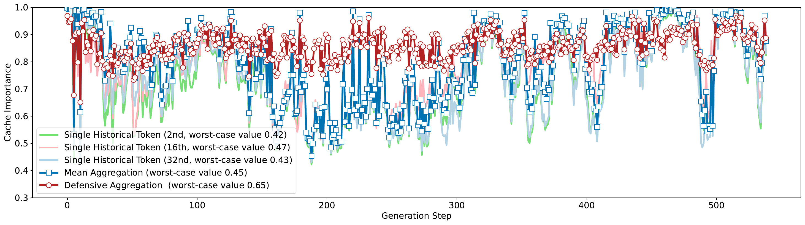
图1：防御性聚合展示了对脆弱稳定性假设的鲁棒性（Llama-3.1-8B，50%缓存大小，第14层，摘要任务）
:::
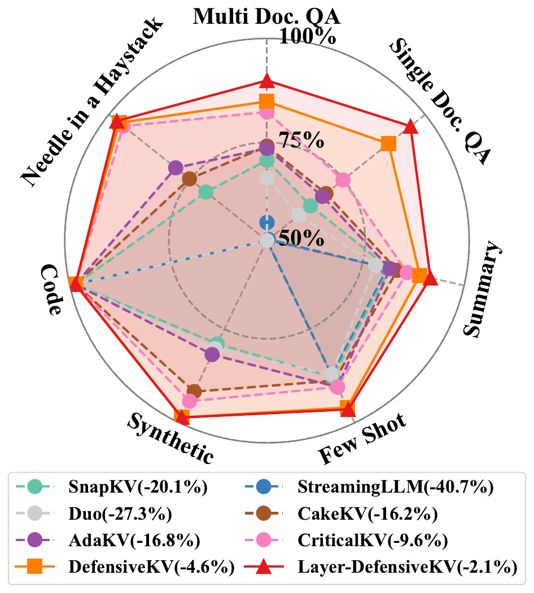
图2：DefensiveKV和Layer-DefensiveKV在各种领域和模型上实现了显著更低的生成质量损失
::: （a）Llama-3.1-8B，20%缓存
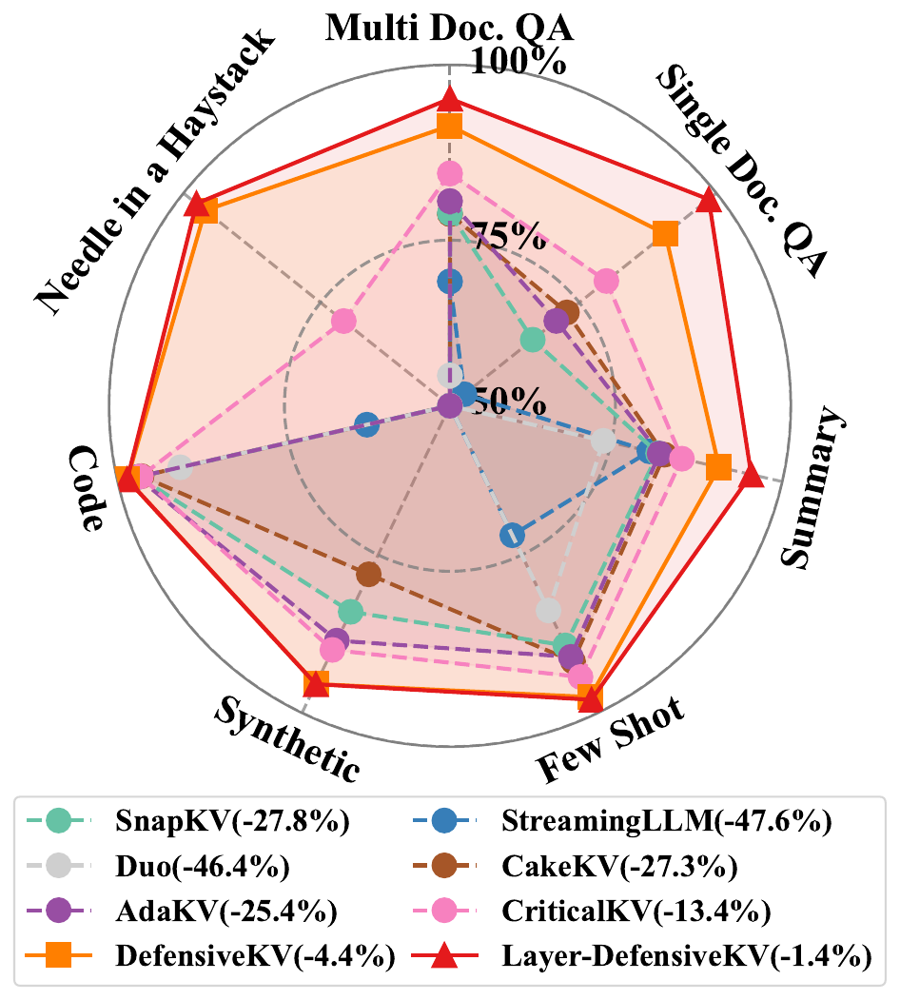
（b）Mistral-7B，20%缓存
:::
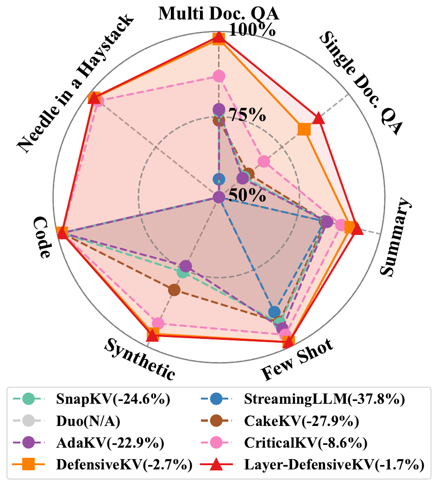
（c）Qwen-32B，20%缓存
:::
（本文中相关工作部分较短，主要与前文方法描述合并）
LLM生成包括两个阶段：预填充（prefilling）和解码（decoding）。在预填充期间，所有输入token的KV状态被计算并缓存为： $$K = H W_K, \quad V = H W_V$$ 其中 $H \in \mathbb{R}^{n \times d}$ 表示 $n$ 个token的隐藏状态，$W_K, W_V \in \mathbb{R}^{d \times d_h}$ 是学习到的矩阵。
在解码期间，LLM取最新的token，计算其查询向量 $q_j = H_{j=-1,:} W_Q$，并使用注意力从缓存的KV条目中检索信息以产生输出 $o_j$ 并预测下一个token： $$o_j = A_j V W_O \quad \text{其中} \quad A_j = \mathrm{softmax}(q_j K^\top / \sqrt{d_h})$$
为了减少维护完整KV缓存的内存开销，开发了缓存淘汰方法。这些方法在很大程度上基于稳定性假设操作：一组固定的KV缓存条目，记为 $(\hat{K}, \hat{V})$，在生成过程中保持一致的重要性。
基于此假设，缓存淘汰的目标是使用历史查询（即早期生成过程中的token）识别这个关键子集 $(\hat{K}, \hat{V})$，并用它替换后续步骤中的完整KV缓存 $(K, V)$。
这个过程通常遵循两步评分-聚合框架，其中每个KV条目的重要性首先被估计（或评分），然后被聚合：
评分（Scoring）：给定 $m$ 个历史token，表示为查询 $Q = [q_1, \ldots, q_m]$，每个 $n$ 个KV缓存条目 $K, V \in \mathbb{R}^{n \times d_h}$ 被评分。这产生了一个重要性矩阵 $I \in \mathbb{R}^{m \times n}$，其中每个元素 $I_{j,i}$ 测量第 $i$ 个KV缓存条目 $(k_i, v_i)$ 对第 $j$ 个历史查询 $q_j$ 的相关性。在实践中，注意力权重 $A_{j,i}$ 作为重要性的直接度量 $I_{j,i}$，因为注意力机制本质上是加权和形式。
聚合（Aggregation）：后续聚合步骤将观察到的重要性矩阵 $I \in \mathbb{R}^{m \times n}$ 转换为向量 $S \in \mathbb{R}^n$，其中每个 $S_i$ 表示第 $i$ 个KV缓存条目的重要性。现有工作采用均值聚合，$S_i = \frac{1}{m}\sum_{j=1}^{m} I_{j,i}$，以突出具有持续高重要性的条目，与稳定性假设一致。
虽然后续研究改进了评分步骤——SnapKV使用池化机制，CriticalKV使用投影值状态 $v_i W_O$ 的范数进行更有原则的评分——但聚合步骤受到的关注很少。这主要是因为均值聚合似乎与底层重要性稳定性假设紧密一致。然而，在本文中，我们展示了该假设的脆弱性，并揭示了在此前提下均值聚合的脆弱性。
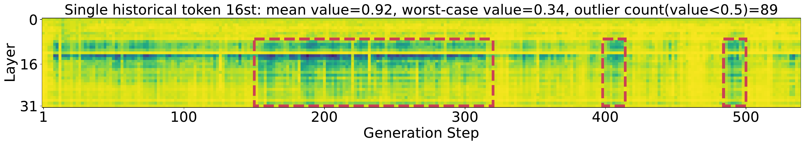
图3：单个历史token（第16个）：脆弱；重要性下降到0.34（最坏情况）
:::
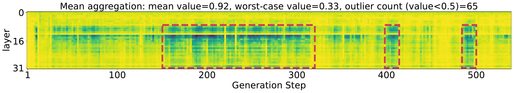
图4：均值聚合：脆弱；重要性下降到0.33（最坏情况）
:::

图5：防御性聚合：鲁棒；保持0.61重要性（最坏情况）
:::
我们使用Llama3.1-8B在政府报告摘要任务上进行了检验。采用SOTA重要性指标，$I_{j,i} = A_{j,i} \times \text{norm}(v_i W_O)$，我们用32个最近的历史token $q_j$ 观察每个缓存条目的重要性。然后我们模拟使用两种不同标准进行50%缓存淘汰。第一种标准使用单个历史token观察的重要性分数，第二种使用跨所有32个历史token的平均分数（均值聚合）。对于每个结果，我们跟踪它在后续生成中相对于完整缓存保留的总重要性的比例。
稳定性假设的脆弱性：图3呈现了第16个历史token的结果（其他token的结果见附录）。结果揭示了普遍但脆弱的稳定性。平均而言，50%保留的缓存子集在生成过程中占据了完整缓存总重要性的0.92。然而，这种高平均值掩盖了底层脆弱性：保留的重要性可以急剧下降，正如在步骤150到320之间的区间所看到的。在这些不稳定时刻，最坏情况保留的重要性低至0.34。此外，异常值——即保留的50%缓存捕获不到总重要性的一半（值<0.5）——很频繁，在此试验中出现了89次。
均值聚合的脆弱性：当前的淘汰方法通常采用均值聚合跨多个重要性观察。理由是获得预期重要性来指导淘汰。然而，通过未能考虑最坏情况，这种策略在脆弱假设下变得脆弱，导致与使用单个不可靠token类似的异常表现。如图4所示，在图3中观察到的相同问题步骤持续存在，最坏情况重要性值达到0.33，导致65个异常值。这个结果是可以预测的。基于单个历史token的观察分数本质上对稳定性假设的脆弱性视而不见；因此它无法防范最坏情况风险。虽然简单平均是这些个体观察之间的一种"调和"形式，产生中庸结果，但它不包含任何控制这种底层风险的机制。因此，它不能聚合一个始终优于每个单个token观察的预测。当大多数单个token观察失败时，均值聚合的结果不可避免地与它们一起下滑，因此不能提供有意义的改进，并产生类似的破坏性异常值。
这强调了一个关键点：与其仅仅专注于设计更准确的重要性指标，开发明确为最坏情况风险控制设计的新聚合方法同样——如果不是更重要的话——可以提供即使大多数单个token观察失败时也能保持可靠的估计。
| 任务类型 | 单文档QA | 多文档QA | 摘要 | Few-shot | 合成 | 代码 |
|---|---|---|---|---|---|---|
| 数据集 | NrtvQA | HotpotQA | GovReport | TREC | PCount | Lcc |
| 均值聚合 | 0.44 | 0.39 | 0.28 | 0.47 | 0.47 | 0.30 |
| 防御性聚合 | 0.62 | 0.60 | 0.52 | 0.61 | 0.61 | 0.50 |
表1：防御性聚合在所有任务类型上持续改善最坏情况值
考虑一个缓存条目可能由于脆弱的稳定性仅在少数单个token观察中表现出高重要性，而在大多数其他时候保持低重要性。均值聚合不会认为这很重要，会错误地淘汰它。当这个条目在未来生成中再次变得关键时，之前的淘汰会导致巨大的重要性损失。因此，依赖均值聚合无法防范这些极端情况。
为了解决这个问题，我们引入了一种新颖的防御性聚合，一种放弃简单平均而支持最坏情况风险控制视角的新策略，如算法1所示。
最坏情况风险估计：从风险控制角度来看，淘汰KV缓存条目的惩罚相当于它在未来时刻将拥有的重要性分数。因此，"最坏情况风险" $R_i^*$ 是条目在整个未来生成过程中可以达到的峰值重要性分数。如果我们表示未来生成的序列为 $L$，则 $R_i^* = \max_{t \in L} I_{t,i}$。由于这个未来的最大值在淘汰时是不可知的，我们改用跨所有 $j$ 历史token观察到的最大重要性分数来近似它，例如 $\tilde{R_i} = \max_{1 \leq j \leq m} I_{j,i} \:,\: \forall i = 1, \ldots, n$。这个 $O(n)$ 过程与均值聚合的运行时间相匹配，但产生了明显更好的实证性能，因为它更好地捕捉了如果条目被删除的潜在最坏情况风险。
自适应先验风险修正：虽然上述估计器采用了跨观察历史的最大值，但它仍可能低估最坏情况风险，因为淘汰方法通常限制观察窗口（例如，32个token）以限制开销。灵感来自贝叶斯估计中的拉普拉斯平滑，我们引入了一种自适应先验风险修正。对于每个头，定义一个头级先验风险 $\bar{R} = \frac{1}{n}\sum_{i=1}^n \tilde{R}_{i}$，即该头跨条目的平均观察最坏情况风险。如果观察到的风险 $R_i$ 低于先验风险 $\bar{R}$，我们将 shortfall 视为观察不足并进行替换：$R_i = \max(\tilde{R}_{i}, \bar{R})$。因此，具有更高整体风险的头接收更大的先验，减少对有限历史观察的依赖。修正的有效性及其自适应设计在第4.3节中得到验证。
通过防范脆弱稳定性假设的风险，我们的防御性聚合显著改善了最坏情况性能，相比均值聚合。如图5所示，它将最坏情况保留重要性从0.33提升到0.63，并完全消除了均值聚合产生的65个异常值。表1进一步确认这一优势在六个不同任务类型的数据集上是一致的。因此，这个简单的两操作方法提供了针对重要性稳定性假设脆弱性的关键防御。
算法1：防御性聚合
输入：重要性分数 I ∈ ℝ^(m×n)，其中 I_{j,i} 是基于历史token j的条目i的重要性
输出：聚合风险分数 R ∈ ℝ^n
1: for i = 1 to n do
2: \tilde{R}_i = max_{1≤j≤m} I_{j,i} // 最坏情况风险估计
3: end for
4: for i = 1 to n do
5: R_i = max(\tilde{R}_i, \bar{R}) 其中 \bar{R} = (1/n)∑_{i=1}^n \tilde{R}_i // 自适应先验风险修正
6: end for
7: return R
基于我们提出的防御性聚合策略，我们引入了两种新颖的缓存淘汰方法：DefensiveKV和Layer-DefensiveKV。
DefensiveKV作为基础变体。它通过用防御性聚合替换传统均值聚合直接集成到传统缓存淘汰工作流中。尽管其简单性，这一修改本身就导致了实质性的性能改进。
Layer-DefensiveKV进一步改进了这一点，结合了逐层预算分配，灵感来自现有策略。它执行跨层的风险条目的联合选择，使得更多预算可以分配给具有更多风险缓存条目的层。
算法2：(Layer)-DefensiveKV
输入：缓存条目 K, V，参数 W_O，m个最近历史token的查询 Q = [q_1,...,q_m]
输出：保留的KV缓存 \hat{K}, \hat{V}
1: 将最近历史token的KV缓存 K[-m:,:],V[-m:,:] 追加到 \hat{K},\hat{V}
2: A ← softmax(QK^T/√d)
3: A ∈ ℝ^(m×n) ← Pooling(A, dim=-1) // 使用SnapKV的池化进行细化
4: R ∈ ℝ^n ← Defensive Aggregation 算法1 (A) // 我们的修改
5: for each v_i ∈ V, i = 1 to n do
6: R_i ← R_i × norm(v_i W_O) // 使用CriticalKV的范数进行细化
7: end for
8: if 没有逐层预算分配 then // 导致DefensiveKV
9: 选择具有最高风险分数R的缓存条目独立地在每层中，并追加到 \hat{K},\hat{V}
10: else // 导致Layer-DefensiveKV
11: for each v_i ∈ V, i = 1 to n do
12: R_i ← R_i / ∑_i norm(v_i W_O)
13: end for
14: 选择具有最高风险分数R的缓存条目跨所有层联合，并追加到 \hat{K},\hat{V}
15: end if
16: return \hat{K}, \hat{V}
DefensiveKV中的关键创新是用我们的防御性聚合策略性地替换传统均值聚合（第6行）。这个简单的修改，只需要最少的更改，将生成质量损失降低超过2倍。Layer-DefensiveKV的扩展也很简单。它包含了两个额外的细化：首先，投影值范数在层间被归一化以解决它们在层间的方差；其次，风险条目是跨所有层联合选择的。这导致了更令人印象深刻的增益，质量损失减少超过4倍。
模型：我们在三个开源LLM上评估我们的方法：Llama-3.1-8B-Instruct（支持高达128K的上下文长度）、Qwen2.5-32B-Instruct和Mistral-7B-Instruct-v0.3（支持高达32K）。
基线：我们将方法与六个基线进行比较。StreamingLLM是一种早期的滑动窗口方法。SnapKV、AdaKV和CAKE使用注意力权重耦合的池化作为重要性指标；CAKE还采用级联架构进行逐层预算分配。SOTA的CriticalKV引入了更准确的重要性指标。DuoAttention是一种基于训练的方法。所有方法使用32的历史窗口大小，并使用FlashAttention-2加速。
设置：遵循之前设置，上下文在问题引入之前被独立压缩。这更好地模拟了实际场景（例如，多轮QA或前缀上下文），其中多个问题通常涉及相同的上下文，或者问题在上下文压缩期间不可用。因此，这个设置更具挑战性，更能反映缓存淘汰方法的真实世界性能。
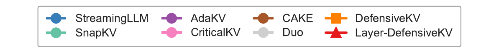
图6：图例
:::
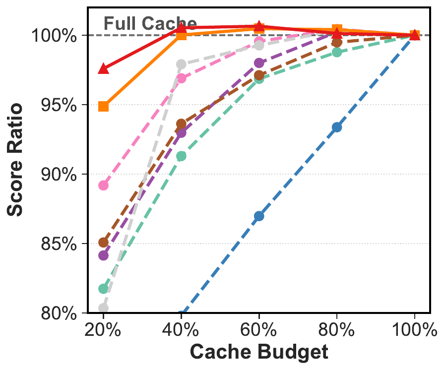
图7：LongBench上16个数据集的平均生成质量概览（Meta-Llama-3.1-8B-Instruct）
:::
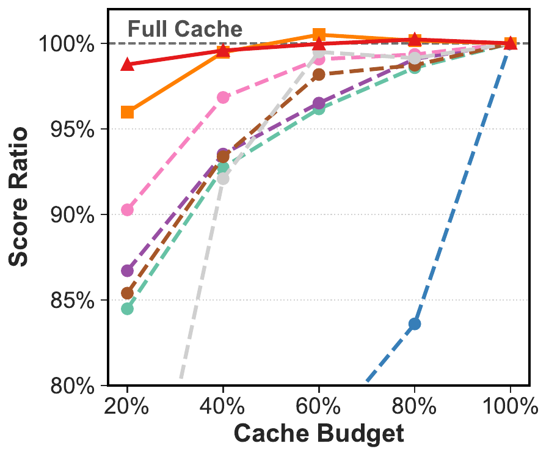
图8：LongBench上16个数据集的平均生成质量概览（Mistral-7B-Instruct-v0.3）
:::
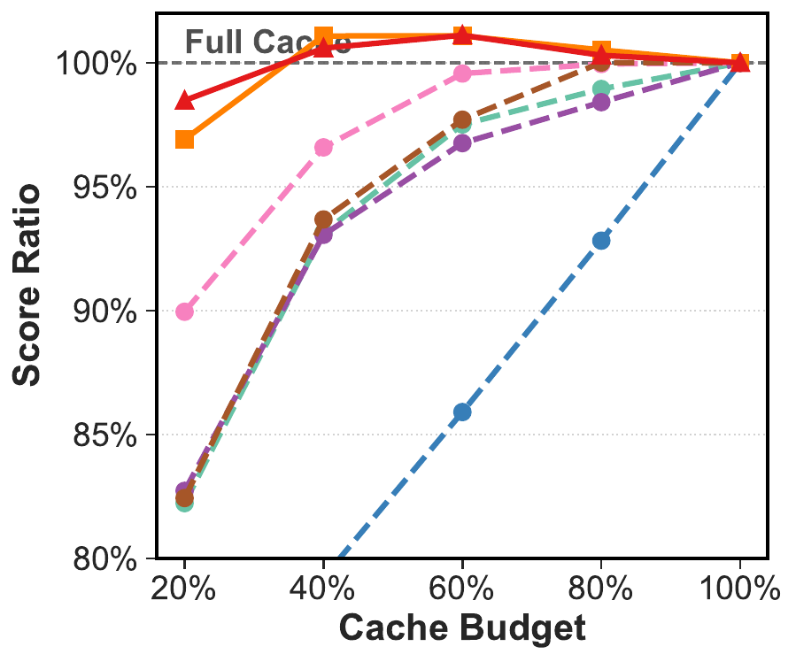
图9：LongBench上16个数据集的平均生成质量概览（Qwen2.5-32B-Instruct）
:::
LongBench作为综合基准测试，具有16个数据集，分为六个任务领域：单文档问答、多文档问答、摘要、few-shot学习、合成任务和代码补全。
总体分析：图7-9说明了我们方法在16个数据集上的平均质量损失的显著优势。随着缓存大小从100%下降到40%，所有基线明显退化，而我们的DefensiveKV和Layer-DefensiveKV保持几乎无损失。例如，在Llama-3.1-8B上使用40%缓存时，CriticalKV（最佳基线）损失3.1%质量，而我们的DefensiveKV显示没有退化，甚至超过基于训练的DuoAttention（2.2%下降，尽管有离线训练成本）。在更小的20%缓存下，CriticalKV的损失为10.6%，而DefensiveKV将其限制在5.1%（超过2倍减少）。我们的Layer-DefensiveKV进一步将损失降至2.3%（超过4倍减少）。类似的优势适用于其他模型。例如，在Mistral-7B上使用20%缓存，DefensiveKV和Layer-DefensiveKV分别达到4.0%和1.3%的损失，远低于CriticalKV的9.7%。
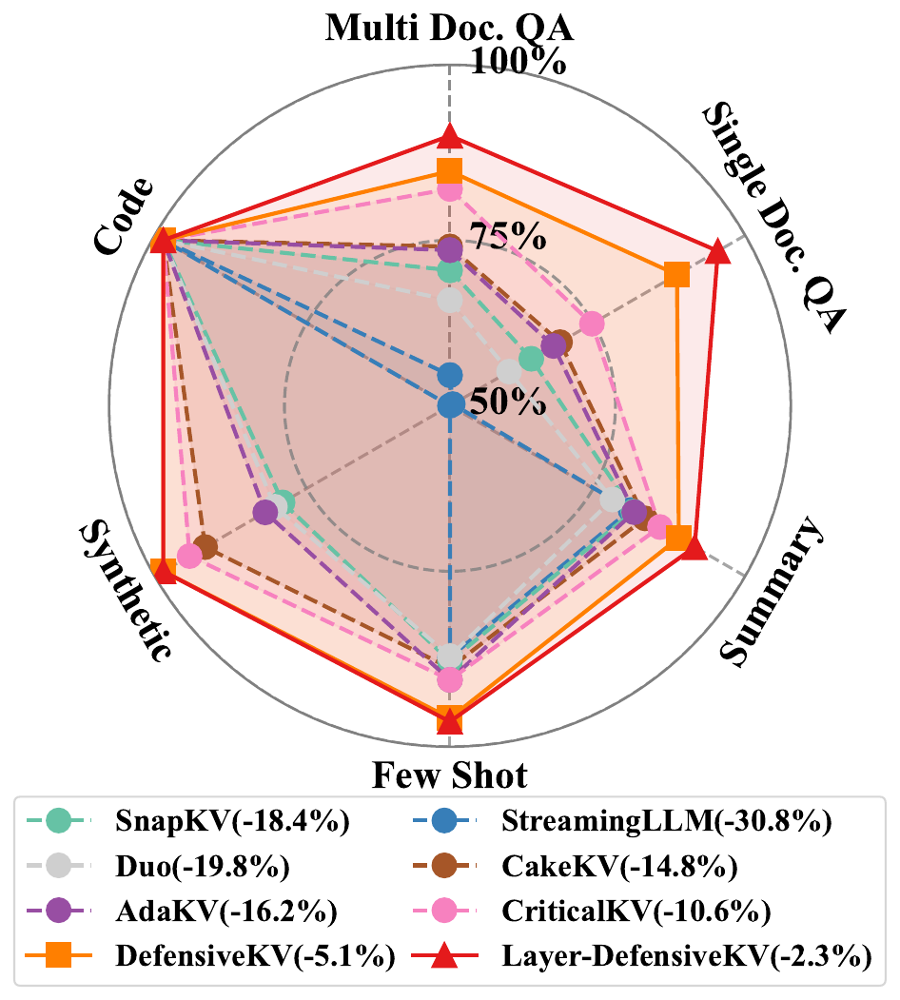
图10：Llama-3.1-8B-Instruct在LongBench上六个任务领域的分析（20%缓存大小）
:::
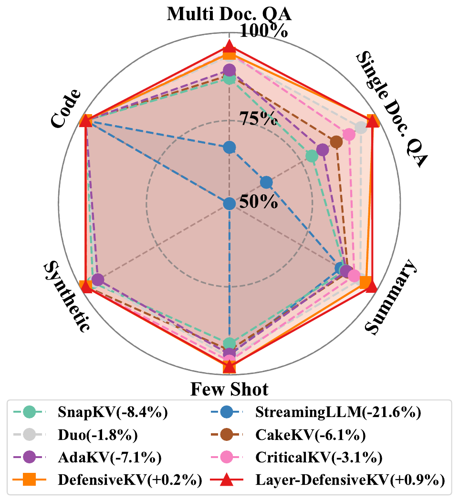
图11：Llama-3.1-8B-Instruct在LongBench上六个任务领域的分析（40%缓存大小）
:::
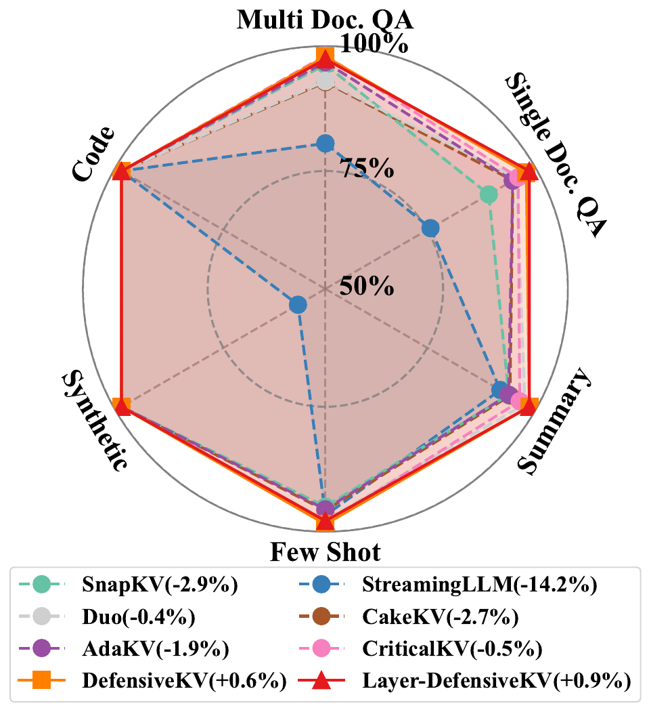
图12：Llama-3.1-8B-Instruct在LongBench上六个任务领域的分析（60%缓存大小）
:::
任务分析：图10-12显示了Llama-3.1-8B按任务领域的平均分数。DefensiveKV和Layer-DefensiveKV持续表现优异。虽然更简单的任务领域（代码、合成）显示大多数方法都有高绩效，但具有挑战性的领域（文档问答、摘要）显示基线在减少缓存下显著退化。例如，在单文档问答（20%缓存）中，CriticalKV（最强基线）下降到完整缓存质量的74.8%；DefensiveKV达到89.6%，Layer-DefensiveKV达到96.7%。
在Needle-in-a-Haystack测试中，关键句子被放置在长上下文中以评估检索能力。我们测试了两个代表性案例，上下文长度为32K：（1）单检索：一个needle被随机插入用于检索。（2）多检索：四个needle被随机插入，都需要被检索。
如图13所示，我们的DefensiveKV和Layer-DefensiveKV在所有设置中实现了显著更高的分数。例如，在支持128K上下文长度的长上下文模型（如Llama-3.1-8B和Qwen2.5-32B）上，我们的方法保持几乎无损失，在仅10%缓存大小下分别获得194和193的分数。相比之下，即使是最强基线CriticalKV在同一条件下也下降到140，而其他方法都低于100——显示出显著差距。在较弱的长上下文能力模型上，即Mistral-7B（最大上下文长度32K），所有基线都遭受严重性能退化。在10%缓存大小下，大多数基线得分低于6，CriticalKV仅达到28。然而，我们的DefensiveKV和Layer-DefensiveKV分别达到139和161，分别超过5倍和5.8倍的改进。
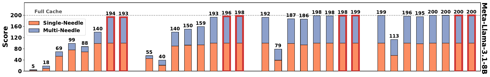
图13：Needle-in-a-Haystack任务的评估（Llama-3.1-8B）
:::
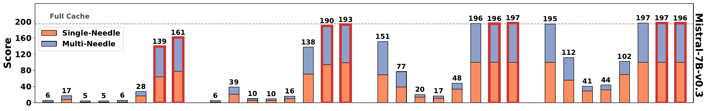
图14：Needle-in-a-Haystack任务的评估（Mistral-7B）
:::
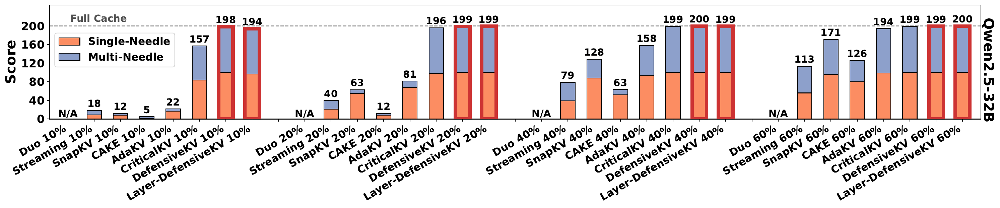
图15：Needle-in-a-Haystack任务的评估（Qwen2.5-32B）
:::
为了分析我们防御性聚合中两个关键操作的作用——最坏情况风险估计和自适应先验风险修正——我们基于DefensiveKV方法进行消融研究。首先，我们仅移除自适应先验风险修正（记为Abl2）。然后，我们进一步消融最坏情况风险估计，用常见均值聚合替换（记为Abl1）。
如图16所示，仅使用最坏情况风险估计（Abl2）已经明显优于使用均值聚合。例如，在Llama-3.1-8B上，Abl2将分数从103（Abl1）提高到179。加上我们的自适应先验风险修正，我们完整的DefensiveKV方法达到194的分数。这些结果确认两个操作都对整体性能有重要贡献。
为了验证我们先验风险修正的自适应设计，我们将其与固定修正阈值（1E-3、1E-4、1E-5）进行消融比较。如图17所示，固定阈值无效。大多数未能超过无修正基线分数179（Abl2），1E-4情况仅提供边际增益至182。然而，我们的自适应修正达到194的分数，确认根据每个头的风险状况定制修正是至关重要的。此外，我们自适应设计的无超参数性质确保在两个额外模型上表现一致强劲。
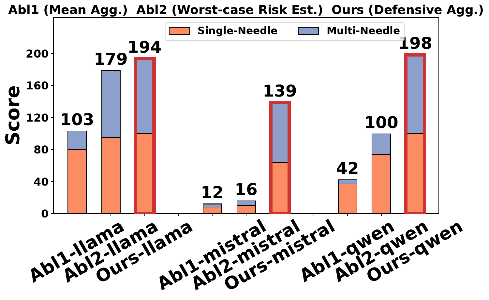
图16：消融研究（10%缓存）
:::
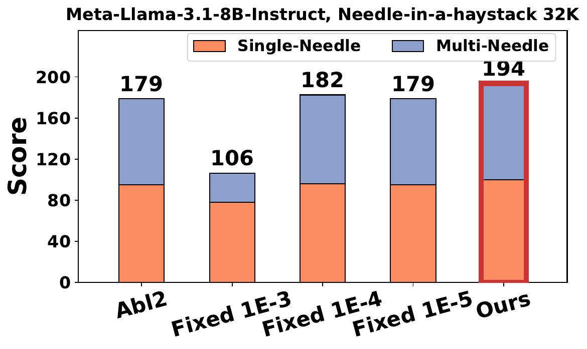
图17：自适应修正
:::
我们比较DefensiveKV和CriticalKV，它们仅在聚合机制上不同，以证明防御性聚合引入了可忽略的计算开销。
我们的实验在80GB A100 GPU上使用Llama-3.1-8B（20%缓存）进行，表明DefensiveKV和CriticalKV具有几乎相同的首个token时间（TTFT）和解码延迟。所有KV缓存淘汰发生在预填充阶段并包含在TTFT中，确认DefensiveKV添加了可忽略的开销。此外，缓存淘汰显著降低了相对于完整缓存的解码延迟：例如，对于batch size 1和128K上下文长度，延迟从0.081s（完整缓存）下降到约0.028s与基于淘汰的方法（2.9倍加速）。此外，缓存淘汰允许更大的batch size；例如，淘汰方法可以处理batch size为2，而完整缓存导致内存不足错误，导致4.2倍的解码吞吐量提升。
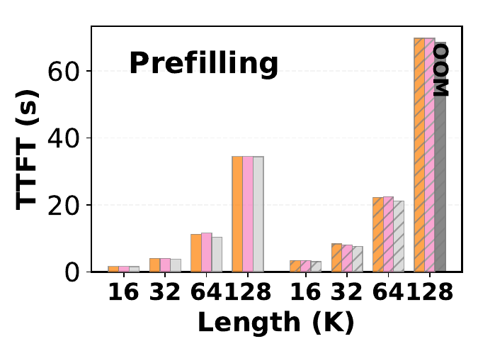
图18：TTFT效率
:::
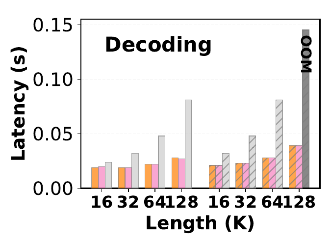
图19：解码延迟效率
:::
这项工作挑战了现有KV缓存淘汰方法背后的脆弱稳定性假设。我们表明广泛使用的均值聚合策略在脆弱稳定性下极其脆弱，导致糟糕的最坏情况性能。为了解决这个问题，我们提出了"防御性聚合"，一种以"最坏情况风险"视角设计的新策略，具有可忽略的计算开销。
基于此，我们研究了DefensiveKV及其逐层感知变体Layer-DefensiveKV，两者都在综合评估中实现了相对于最先进方法的显著改进。
我们的工作开创了一个新的研究方向，强调"最坏情况风险"感知的聚合，以减轻缓存淘汰中经常被忽视的脆弱性——这是高效LLM推理的关键但未被充分探索的组成部分。我们希望这些贡献为更有效的缓存淘汰方法铺平道路，这对推进LLM推理至关重要。
识别关键问题：论文首次系统性地揭示了KV缓存淘汰中"稳定性假设"的脆弱性，这是一个之前被忽视的根本性问题。
防御性聚合策略：提出了一个优雅的两步防御性聚合方法（最坏情况风险估计 + 自适应先验风险修正），将金融领域的风险管理思想引入LLM推理优化。
显著性能提升：在20%缓存大小下，DefensiveKV和Layer-DefensiveKV分别将生成质量损失降低2.3倍和4.3倍，相比最强基线CriticalKV。
零计算开销：防御性聚合仅需要两个线性时间操作，与标准均值聚合的计算效率相匹配，几乎不增加额外延迟。
实验规模有限：主要在3个模型（Llama-3.1-8B、Mistral-7B、Qwen2.5-32B）上评估，未在大规模模型（如70B+）上验证。
特定任务优势：对于简单任务（代码、合成），性能提升相对较小，防御性聚合的优势主要体现在复杂推理任务上。
观察窗口限制：使用32个历史token的观察窗口可能仍然无法捕捉所有极端情况。
长上下文LLM部署：适用于需要处理长上下文的应用场景（如文档摘要、长文本问答）。
资源受限环境：在显存有限的设备上，通过缓存淘汰实现更高效的推理。
多轮对话系统：需要保留关键上下文信息的多轮对话场景。
动态调整策略：根据生成内容动态调整最坏情况风险估计的窗口大小。
与其他淘汰方法结合：将防御性聚合思想应用于其他缓存淘汰方法（如H2O、Scissorhands）。
长期上下文建模：探索更长期的历史观察来更准确估计最坏情况风险。
硬件协同设计：针对特定硬件优化防御性聚合的实现。